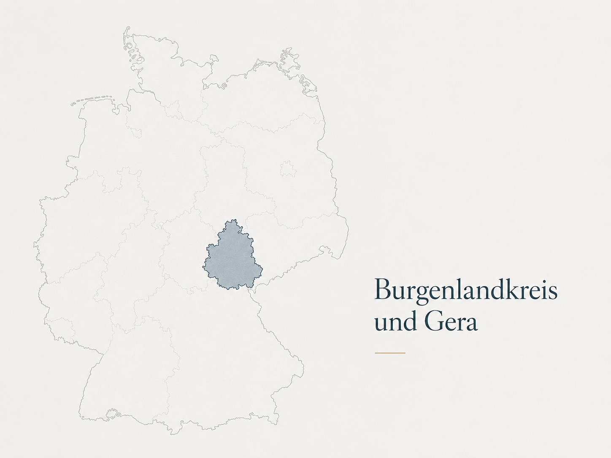

Rechtliche Betreuungbraucht KlarheitStruktur und Vertrauen
Betreuungsbüro
Maximilian Sporbert
Rechtliche BetreuungVerfahrenspflegschaft
Unser Büro ist vom bis einschließlich urlaubsbedingt nicht besetzt.
Nachrichten können weiterhin per E-Mail übermittelt werden.
Ihre Situation
Der passende Einstieg
Je nach Situation stehen andere Fragen im Vordergrund. Hier finden Sie Antworten – klar und auf den Punkt.
Für betroffene Personen
Orientierung zu Rechten, Aufgabenbereichen, Ablauf und Kontaktmöglichkeiten.
WeiterlesenFür Angehörige
Einordnung typischer Fragen, hilfreicher Angaben und der Grenzen rechtlicher Betreuung.
WeiterlesenFür Behörden und Einrichtungen
Kontaktwege, Zuständigkeiten und Hinweise für professionelle Beteiligte.
Zum FachzugangLeistungsüberblick
Rechtliche Betreuung und Verfahrenspflegschaft
Beide Tätigkeiten beruhen auf gerichtlicher Bestellung, haben aber unterschiedliche Aufgaben.
Gerichtlich festgelegte Aufgabenbereiche
Rechtliche Betreuung
Rechtliche Betreuung betrifft konkrete Aufgabenbereiche, die das Gericht festlegt. Es geht um rechtliche Angelegenheiten, Abstimmungen, Anträge, Bescheide und Fristen.
- Aufgabenbereiche statt pauschaler Zuständigkeit
- Behördenkontakte, Schreiben und Fristen
- notwendige Hilfen anstoßen, nicht selbst als Pflege oder Alltagshilfe leisten
Auch Ergänzungs- und Verhinderungsbetreuungen können übernommen werden, wenn das Betreuungsgericht dies für eine konkrete Angelegenheit oder Vertretungssituation anordnet.
Interessen im konkreten Verfahren
Verfahrenspflegschaften
Verfahrenspflegschaft bezieht sich auf ein konkretes gerichtliches Verfahren. Aufgabe ist, die Sichtweise und Interessen der betroffenen Person in das Verfahren einzubringen.
- Gespräch mit der betroffenen Person
- Sichtung verfahrensrelevanter Unterlagen
- Rückmeldung an das Gericht
Klare Zuständigkeit
Was rechtliche Betreuung nicht ist
Rechtliche Betreuung und Verfahrenspflegschaft beruhen auf gerichtlicher Bestellung und gelten für klar bestimmte Aufgaben oder Verfahren. Das Betreuungsbüro ist keine Pflegeeinrichtung, kein Notfalldienst und keine allgemeine Rechtsberatungsstelle. Praktische Hilfen können im zuständigen Aufgabenbereich angestoßen oder abgestimmt werden.
Arbeitsweise
Arbeitsweise
Unterlagen, Fristen und Rückmeldungen werden nachvollziehbar geordnet. Zugleich bleibt die persönliche Situation der betroffenen Person maßgeblich.
Klar in den Aufgabenbereichen
Maßgeblich bleibt, was gerichtlich festgelegt ist und rechtlich geklärt werden muss.
Verlässlich in der Abstimmung
Unterlagen, Fristen und Rückmeldungen werden nachvollziehbar eingeordnet und bearbeitet.
Persönlich im Gespräch
Die betroffene Person bleibt mit ihrer Sichtweise und Lebenssituation im Mittelpunkt.
Region
Tätig im Burgenlandkreis und in Gera
Der Tätigkeitsschwerpunkt liegt im Burgenlandkreis, insbesondere in Zeitz, Weißenfels und Naumburg. Darüber hinaus ist das Betreuungsbüro auch in Gera und im angrenzenden Umland tätig.

Kontakt
Kontakt und Erreichbarkeit
Für Anfragen, Rückmeldungen oder Abstimmungen erreichen Sie das Betreuungsbüro per E-Mail. Weitere Kontaktmöglichkeiten und Hinweise zur telefonischen Sprechzeit finden Sie auf der Kontaktseite.